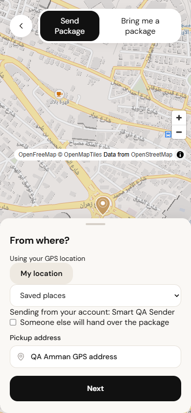
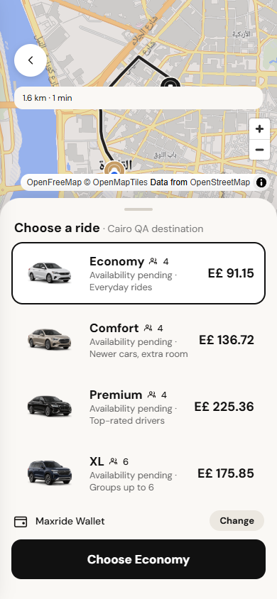
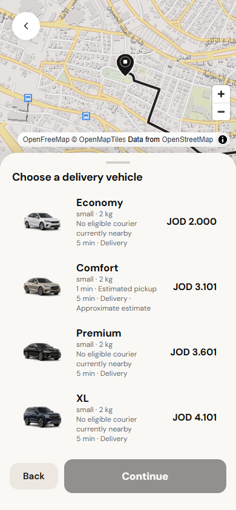

Left: previous Delivery. Centre: existing Taxi visual reference. Right: implemented Delivery vehicle sheet. Functional content differs by service; these are actual screenshots, not generated concepts. The new stages and bilingual responsive captures are in this directory.


